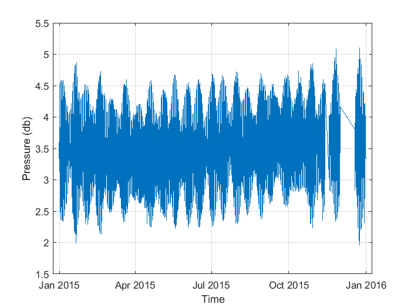
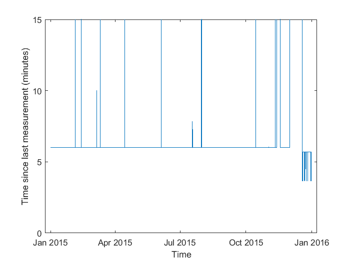
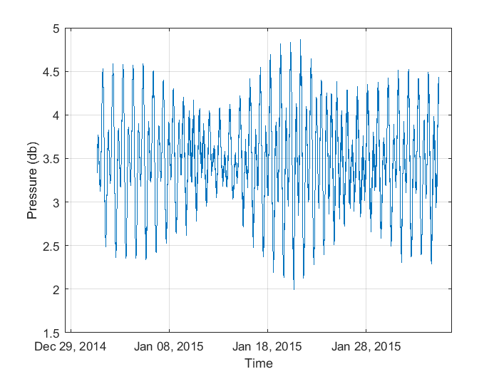
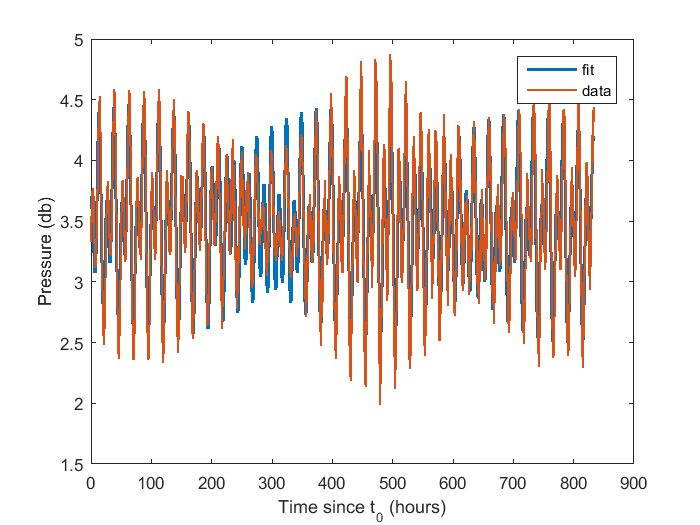
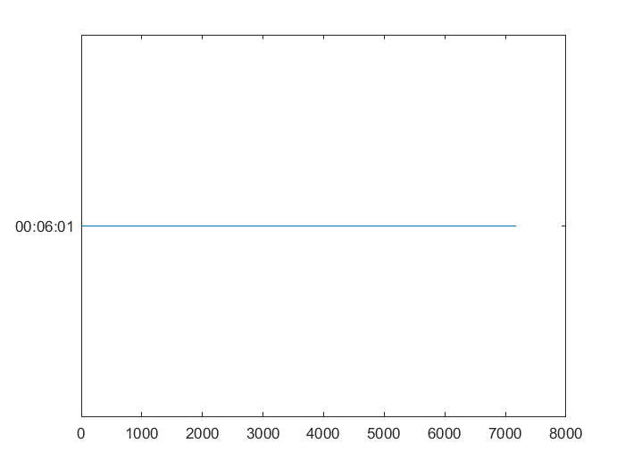
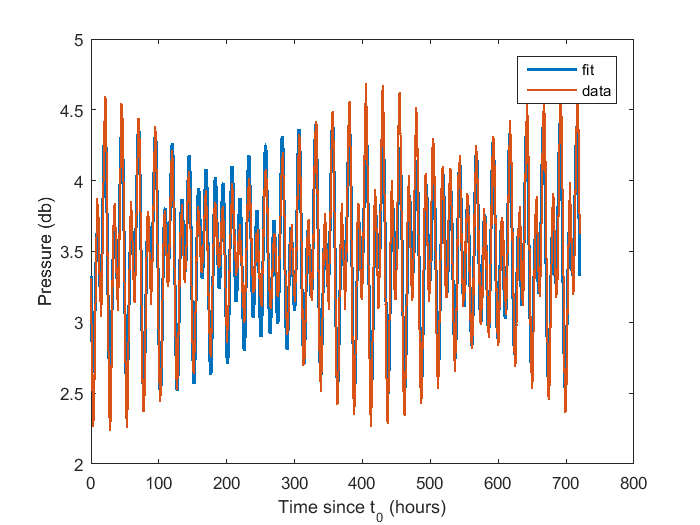

Contents
Ren_data1_week3.m
Sea surface pressure, fitting to sines and cosines (least square fit)
A. Ren October 19, 2017
load data
load('scrippspier_auto_p.mat')
plot of raw data for 2015
figure('Name', 'Full 2015 Pressure Time Series')
plot(SP_time_2015_mtlabtime, SP_press_2015)
xlabel('Time')
ylabel('Pressure (db)')
grid on

plot of time between measurements and median
dataspacing = diff(SP_time_2015_mtlabtime);
figure('Name', 'Time Increment Between Measurements')
plot(SP_time_2015_mtlabtime(2:end), minutes(dataspacing))
xlabel('Time')
ylabel('Time since last measurement (minutes)')
ylim([0 15])
medianincr = median(dataspacing);
disp('median time between measurements: '); disp(medianincr);
median time between measurements:
00:06:01

plot of time when data consistently same measurement frequency
inde = find(dataspacing ~= duration(0, 6, 1), 1, 'first');
disp('time increment non-uniform after: ');
disp(SP_time_2015_mtlabtime(inde))
disp('record starts: ')
disp(SP_time_2015_mtlabtime(1))
figure('Name', 'Data for month of January 2015')
plot(SP_time_2015_mtlabtime(1:inde), SP_press_2015(1:inde))
grid on
xlabel('Time')
ylabel('Pressure (db)')
time increment non-uniform after:
04-Feb-2015 09:24:36
record starts:
31-Dec-2014 16:00:05

fit tidal signals and fit mean
sampledat_w = SP_press_2015(1:inde);
sampletim_w = SP_time_2015_mtlabtime(1:inde);
sampletel_w = sampletim_w - sampletim_w(1);
sampletel_w = hours(sampletel_w);
T_O1 = 25.82;
T_K1 = 23.93;
T_M2 = 12.42;
col1 = repmat([1], length(sampledat_w), 1);
col2 = sampletel_w;
col3 = sin( (2*pi./T_O1) * col2 );
col4 = cos( (2*pi./T_O1) * col2 );
col5 = sin( (2*pi./T_K1) * col2 );
col6 = cos( (2*pi./T_K1) * col2 );
col7 = sin( (2*pi./T_M2) * col2 );
col8 = cos( (2*pi./T_M2) * col2 );
A = [col1 col2 col3 col4 col5 col6 col7 col8];
x = (A'*A)^(-1) *A' *sampledat_w;
figure('Name', 'Compare three tidal component fit and data from Jan 2015')
yfit3 = A*x;
plot(sampletel_w, yfit3, 'LineWidth', 1.5)
hold on
plot(sampletel_w, sampledat_w, 'LineWidth', 1.2);
legend('fit', 'data')
xlabel('Time since t_0 (hours)')
ylabel('Pressure (db)')
hold off

statistics
y3fit_mean = mean(sampledat_w);
disp('mean = '); disp(y3fit_mean)
disp('mean from least squares: '); disp(x(1))
Amp_O1 = sqrt( (x(3))^2 + (x(4))^2); disp('O1'); disp(Amp_O1);
Amp_K1 = sqrt( (x(5))^2 + (x(6))^2); disp('K1'); disp(Amp_K1);
Amp_M2 = sqrt( (x(7))^2 + (x(8))^2); disp('M2'); disp(Amp_M2);
mean =
3.486089027722485
mean from least squares:
3.514317061297172
O1
0.168622638355643
K1
0.371472588149105
M2
0.527373768555816
Pick time during summer
mid june to mid july
Here I will fit the mean and three tidal frequencies only.
i1 = find(SP_time_2015_mtlabtime > datetime([2015 6 15], 'TimeZone', ...
'America/Los_Angeles'), 1, 'first');
i2 = find(SP_time_2015_mtlabtime > datetime([2015 7 15], 'TimeZone', ...
'America/Los_Angeles'), 1, 'first');
figure('Name', 'Summer Dataspacing')
plot(dataspacing(i1:i2))
sampledat_w = SP_press_2015(i1:i2);
sampletim_w = SP_time_2015_mtlabtime(i1:i2);
sampletel_w = sampletim_w - sampletim_w(1);
sampletel_w = hours(sampletel_w);
col1 = repmat([1], length(sampledat_w), 1);
col2 = sampletel_w;
col3 = sin( (2*pi./T_O1) * col2 );
col4 = cos( (2*pi./T_O1) * col2 );
col5 = sin( (2*pi./T_K1) * col2 );
col6 = cos( (2*pi./T_K1) * col2 );
col7 = sin( (2*pi./T_M2) * col2 );
col8 = cos( (2*pi./T_M2) * col2 );
B = [col1 col3 col4 col5 col6 col7 col8];
x_s = (B'*B)^(-1) *B' *sampledat_w;
Amp_O1_s = sqrt( (x_s(2))^2 + (x_s(3))^2); disp('O1'); disp(Amp_O1_s);
Amp_K1_s = sqrt( (x_s(4))^2 + (x_s(5))^2); disp('K1'); disp(Amp_K1_s);
Amp_M2_s = sqrt( (x_s(6))^2 + (x_s(7))^2); disp('M2'); disp(Amp_M2_s);
O1diff = Amp_O1 - Amp_O1_s
K1diff = Amp_K1 - Amp_K1_s
M2diff = Amp_M2 - Amp_M2_s
O1
0.169919717158543
K1
0.379903027179325
M2
0.525844439177677
O1diff =
-0.001297078802900
K1diff =
-0.008430439030220
M2diff =
0.001529329378139

figure('Name', 'Compare three tidal component fit and data from Jun 2015')
yfit3_s = B*x_s;
plot(sampletel_w, yfit3_s, 'LineWidth', 1.5)
hold on
plot(sampletel_w, sampledat_w, 'LineWidth', 1.2);
legend('fit', 'data')
xlabel('Time since t_0 (hours)')
ylabel('Pressure (db)')

Chi Square and Evaluating Chi Square Misfit
sampledat_w = SP_press_2015(1:inde);
sampletim_w = SP_time_2015_mtlabtime(1:inde);
sampletel_w = sampletim_w - sampletim_w(1);
sampletel_w = hours(sampletel_w);
ind1 = find(sampledat_w > 4.45, 1 , 'first');
numberplus = 9;
sigma = std(sampledat_w(ind1:ind1+numberplus));
chi_square = sum( ...
((sampledat_w - A*x).^2 ) /...
sigma^2 ...
)
gammainc(chi_square*0.5, (size(A, 1) - size(A, 2) +1)*0.5)
S2 = 12;
N2 = 12.66;
col1 = repmat([1], length(sampledat_w), 1);
col2 = sampletel_w;
col3 = sin( (2*pi./T_O1) * col2 );
col4 = cos( (2*pi./T_O1) * col2 );
col5 = sin( (2*pi./T_K1) * col2 );
col6 = cos( (2*pi./T_K1) * col2 );
col7 = sin( (2*pi./T_M2) * col2 );
col8 = cos( (2*pi./T_M2) * col2 );
col9 = sin( (2*pi./S2) * col2 );
col10 = cos( (2*pi./S2) * col2 );
col11 = sin( (2*pi./N2) * col2 );
col12 = cos( (2*pi./N2) * col2 );
A2 = [col1 col3 col4 col5 col6 col7 col8 col9 col10 col11 col12];
x2 = (A2'*A2)^(-1) *A2' *sampledat_w;
chi_square = sum( ...
((sampledat_w - A2*x2).^2 ) /...
sigma^2 ...
)
gammainc(chi_square*0.5, (size(A2, 1) - size(A2, 2))*0.5)
chi_square =
3.614646204926934e+05
ans =
1
chi_square =
6.605280483969307e+04
ans =
1